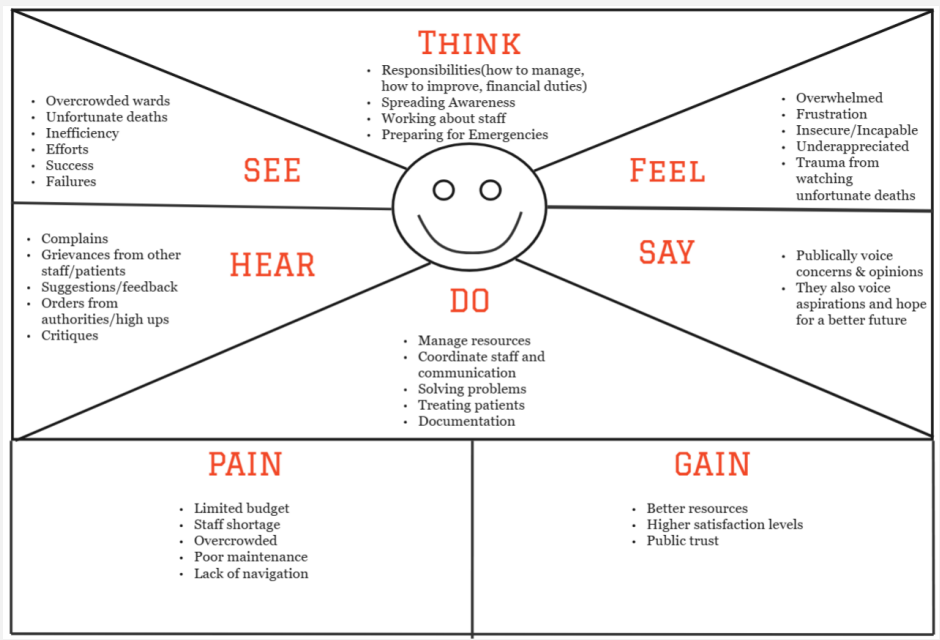

In the last session, our teacher gave us a task to do primary and secondary research on the topic *Problems
Faced in Government Hospitals.* Our team planned to visit a government hospital in Kannur on Saturday for
primary research, but it was closed because of a holiday, so we couldn’t collect firsthand data. Instead,
we focused on secondary research to understand the issues. In this session, we presented our findings based
on
secondary research, and this video shows our presentation and the main points we shared.
Our team gave the presentation, and while it was good, our sir expected more from us. We
made a mistake during our secondary research because we didn’t check the dates of the sources we used. This made
him a bit upset. After the presentation, my team and I decided to visit the government hospital on Thursday to
do primary research and gather better information. Here are some pictures and videos from our visit to the
hospital.
My team and I visited Bowring & Lady Curzon Hospitals for our research to observe the conditions and gather information. Upon
arrival, we noticed that the building was undergoing repairs, which caused some disruption and made the
environment less comfortable. Inside the hospital, we observed that the cleanliness was poor, and there was
a
strong unpleasant smell in the air, which affected the overall atmosphere. Despite these issues, we spoke to
many people, including staff and patients, to understand their experiences and gather insights about the
hospital's functioning.
Additionally, we noticed some problems with the hospital’s security staff. One security guard was found
sleeping
during her duty, while another was busy on a phone call, which raised concerns about the level of attention
given to security. We also observed that out of the six lifts in the hospital, only two were working
properly,
which likely caused inconvenience for patients and visitors.
I asked some students who were training at the hospital about their experiences, but they seemed hesitant to
share anything negative. They were worried that if they spoke up, they might face consequences and be
removed
from their positions. To ease their concerns, I explained that I wasn’t sharing their responses with anyone
else
and that my team and I were simply conducting research for a design thinking project. After this, they felt
more
comfortable talking.
One of the students then asked me which college I was studying at, and I told them that I am studying B.Tech
in
Computer Science and Engineering at CMR University. After hearing this, they seemed more willing to share
their
thoughts. I asked the students whether the doctors were polite or rude. they mentioned that while some
doctors
are polite, others can be rude with the patients. When I asked about the bad smell in the hospital, they
told me
that it’s not just a one-time issue—it’s something they experience every day and has become a regular
problem.
Bushra conducted the primary research for this topic. It is a significant subject, hence I documented below.
During our primary research, we interviewed people who shared some issues they face at the hospital. They
mentioned having to stand in long queues, even for small payments of ₹100 or ₹50, which is challenging
during
emergencies. There were not enough chairs near the operation theatre for patients' relatives to sit, and
ongoing
construction work nearby caused a lot of disturbance. Here are some pictures of my team and me conducting
interviews and primary research.
Secondary research
About
Bowring and Lady Curzon Hospitals (BLCH) is a teaching hospital and autonomous university in Bengaluru,
Karnataka, India. It was originally a medical institution belonging to Mysore State, but in 1884 it was made
over to the Civil and Military Administration. This hospital was only the Civil Medical Institution of Bengaluru
till 1890. It had accommodation for 104 beds, of which 80 were for men and 24 for women patients. Additional
accommodation for female patients was provided by the donations contributed by philanthropic citizens and by the
Government of India. Sri Atal Bihari Vajpayee Medical College and Research Institute inaugurated on 29 December
2020 is located close by.
Located in Shivajinagar in the city's central business district, the 152-year-old hospital has also taught
students pursuing medical degrees since the late 19th century during the British Raj.
History
The Bowring & Lady Curzon Hospitals was built on the plan of the Lariboisière Hospital in Paris and was formally
opened in 1868 by Mr. Lewin Benthon Bowring, the then Commissioner of Mysore. It was originally a medical
institution belonging to Mysore State, but in 1884 it was made over to the Civil and Military Administration.
This hospital was only the Civil Medical Institution of Bengaluru till 1890. It had accommodation for 104 beds,
of which 80 were for men and 24 for women patients. Additional accommodation for female patients was provided by
the donations contributed by philanthropic citizens and by the Government of India. This additional hospital was
named Lady Curzon Hospital. The two hospitals were fully equipped with X - ray and Pathological laboratory. They
were both placed in the combined charge of one Superintendent in 1911. In 1947, the Civil and Military station
were retroceded to the Mysore Durbar. As a consequence of this, the Bowring & Lady Curzon Hospitals along with
other medical institutions of the area were placed under the administrative control of the Mysore Medical
Department.
Research activity : The institute played active role during COVID-19 pandemic not only by providing healthcare
services but also enriching medical science through its research work. Source
Reviews of Hospital
Youtube Video
Toolkit Arsenal-02
In this session, our task was to create three key diagrams—Why Web Map, Stakeholder Map, and Empathy Map—to analyze the problem of administrative issues in government hospitals. This exercise was crucial for breaking down the problem, identifying the key people involved, and understanding their perspectives. Here’s how we approached the task:
Why Web Map Creation:
Defining the Problem:
The first step was to define the core issue: Administrative problems in government hospitals. We discussed and identified various factors contributing to this issue, including:
Inefficient management: Long queues at cash counters and patients being redirected between doctors.
Hygiene issues: Poor cleanliness and lack of water facilities.
Staff shortages: Insufficient doctors, nurses, and support staff.
Communication barriers: Language differences that make it difficult for patients to communicate.
A Why Web Map is a visual representation of the root causes and interconnected factors of a central problem.
We began by placing the central problem, “administrative issues in government hospitals,” at the heart of the map. From there, we branched out into different layers:
First Layer: Key problem areas like hygiene, management, staff shortages, and communication.
Second Layer: Specific causes such as lack of resources, insufficient funding, and untrained staff.
Third Layer: Broader consequences, including patient dissatisfaction and erosion of trust in public healthcare.
Why web map
The Why Web Map became increasingly complex as we continued to explore the interconnections between the causes. The web started to look cluttered, making it difficult to track the relationships between the causes and their effects.
To address this, Dattatreya took the initiative to reorganize the Why Web Map. She restructured the connections for clarity, grouping related issues together and ensuring neatness. The revised map retained all the points from our brainstorming session but was presented in a more structured, easy-to-understand way.
This activity underscored the importance of clarity and structure in problem-solving. Redrawing the map not only improved its visual appeal but also enhanced the efficiency of our analysis, helping us transition smoothly to the next steps.
Stakeholders Map
After completing the Why Web Map, the next task was to construct the Stakeholder Map for hospital administration. The Stakeholder Map helps identify individuals, groups, or entities directly or indirectly involved in or affected by administrative issues. Once we identified the stakeholders, we connected them to visualize their relationships and interdependencies.
Identification of Stakeholders
Primary Stakeholders:
These are individuals or groups directly involved or impacted by hospital administration.
Doctors: Responsible for diagnosing and treating patients through consultations and prescribed medications.
Nurses: Provide direct care to patients, assisting doctors and ensuring patient comfort.
Patients: The main users of the hospital’s services.
Administrative Staff: Manage appointments, cash counters, and the overall administrative tasks in the hospital.
Support Staff: Responsible for cleaning, running the canteen, and handling operational tasks like recruitment.
Pharmacists: Dispense medicines based on doctor prescriptions.
Secondary Stakeholders:
These groups either influence or are influenced by hospital administration.
Government and Policymakers: Provide funding and establish regulations governing hospital operations.
Suppliers: Supply essential medical equipment, medicines, and other hospital necessities.
NGOs: Often involved in health sector initiatives or hospital support programs.
Local Community: Affected by the hospital's services and its reputation in the area.
Media: Reports on hospital performance and issues.
Technicians: Maintain the hospital’s equipment and IT systems.
Educational Institutions: Medical colleges that collaborate with the hospital for internships and training.
This Stakeholder Map was initially drawn on the whiteboard and later recreated using the Miro app for better visualization.
Stakeholder Map
Empathy Map
An empathy map is typically divided into several sections, such as what stakeholders feel, think, see, say, hear, do, as well as their pain points and gains. Below is our Empathy Map focused on the administration of government hospitals: br

Essentia
Session Overview
In today’s session, we continued progressing through the design thinking process. After completing the **Empathize** stage, where we focused on understanding the problem and the perspectives of the stakeholders, we transitioned to the **Define** stage. This stage is crucial as it helps in clearly articulating the problem at hand and its underlying causes.
As a team, we collaborated to analyze the issues faced by government hospitals and identified the core problem: **administration issues**. This broad issue is intricately tied to several key factors that contribute to its complexity, including **lack of funding**, **insufficient technology**, **poor infrastructure and engineering**, and **lack of proper education and training** for hospital staff.
Once we had a clearer understanding of the problem, we brainstormed and came up with three key **"How Might We" (HMW)** questions. These questions are intended to help us reframe the problem and guide our search for solutions by focusing on actionable opportunities. Each question addresses a specific area that needs improvement and offers a starting point for innovative thinking. The **HMW** questions are as follows:
1. How might we use technology to improve hospital management and make the administrative process more time-efficient for both staff and patients?
This question focuses on exploring ways to leverage technology, such as digital tools, automated systems, or management software, to streamline the administrative processes and reduce delays or inefficiencies in hospital operations.
2. How might we educate and raise awareness among the staff of government hospitals to establish proper channels of administration and safety?
This question tackles the issue of educating hospital staff to improve their understanding of administrative processes, safety protocols, and the importance of following structured procedures, which can ultimately lead to better management and smoother operations.
3. How might we increase funding for government hospitals so that there is an improvement in management, hygiene, and a more equitable distribution of resources?
Addressing the financial constraints that many government hospitals face, this question aims to explore ways to secure additional funding or resources to improve hospital infrastructure, hygiene standards, and overall management, thereby improving the quality of care provided.
These HMW questions will serve as the foundation for our next steps in the design thinking process, guiding us as we develop practical, innovative, and human-centered solutions. By framing the problem in this way, we can ensure that our efforts remain focused on solving the core issues and improving the overall administration of government hospitals.
Here is the documentation from today’s session, summarizing our work and progress so far….